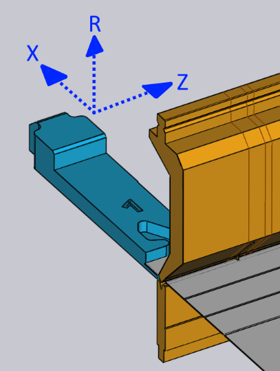

Redigér anslagsfingrene
Anslagsfingerpositionerne for hver bukning kan justeres ved blot at klikke på anslagsfingeren — dette åbner panelet Måler, som vises ved siden af.
Målerpanelet

-
Brug vælgeren Bagstop til at vælge det anslag, der ønskes redigeret (der kan også blot klikkes på anslaget, og panelet vises til at redigere det anslag). Hvis der klikkes på det andet anslag med Shift+Klik, kan de fælles indstillinger for begge anslag redigeres sammen.
-
Indgangene Z, X og R til at justere anslagenes position i tre dimensioner. For de fleste afkantningsmaskiner er akserne som angivet på billedet nedenfor:[1]
 -
Vælgeren Gribeposition bruges til at engagere en anden overflade af anslagsfingeren til delen. Sættet af tilgængelige overflader afhænger af maskinen, og ikke alle overflader er måske anvendelige til alle bukninger (TecZone Bend vil informere, såfremt en bestemt overflade ikke kan bruges). Billedet nedenfor viser forskellige overflader, der bruges:

-
Indstillingen Tilbagetrækning bruges til at indstille anslagets tilbagetrækningsafstand før bukning. For nogle bukninger skal anslagsfingeren trækkes tilbage (i +X-retningen) med en vis afstand efter delen er klemt af stansen, men før den bukkes (for at undgå en kollision). Denne indstilling bruges til at styre tilbagetrækningsafstanden. Når dette redigeres, trækker TecZone Bend faktisk anslagsfingeren tilbage med den specificerede værdi som en forhåndsvisning, så det kan vurderes, hvorvidt tilbagetrækningen måtte være tilstrækkelig.
-
Brug knappen Beregn automatisk til at få TecZone Bend til automatisk at beregne en position for den specificerede anslagsfinger. Generelt vil TecZone Bend have flere anslagsmuligheder, og ved gentagne klik på knappen Auto-Placér vil man køre gennem disse muligheder. For at vende tilbage til standard, luk anslagspanelet, klik på anslag igen, og klik derefter på Auto-Placér - den første position, der vælges, er standarden (det ville også være resultatet af den oprindelige auto-tækkefølgeopdeling og klargøring).
-
Brug knappen Vend emne til at ilægge den anden side af delen i maskinen og beregn anslaget på ny. Dette svarer til knappen Vend del i bukningspanelet.
-
Brug knapperne Tilbage og *Videre*til at gå til forrige eller næste bukning, og for at redigere anslagspositionerne for denne bukning.
Avanceret
Her er nogle mere avancerede arbejdsgange med anslagsfingrene:
Redigering af anslag for flere bukninger
Det er muligt at redigere anslagspositionerne for flere bukninger på samme tid.
For at gøre dette vælges først flere bukninger med Shift+Klik på bukningsnumrene i bukningsnavigatoren. Klik derefter på et anslag. Billedet ved siden af viser anslagspositionerne for bukning 1, 2 og 4, der redigeres sammen:

I dette eksempel bruger bukningerne alle den samme Z-position for anslaget, og redigering af denne position vil justere Z-positionen for alle anslag. Positionsværdierne X og R er tomme, da de er forskellige for hver bukning. Der kan dog indtastes en X- eller R-værdi, og den vil blive anvendt til alle bukninger.
Generelt vil der sjældent være behov for at bruge denne funktionalitet. Anslagspanelet registrerer begrænsningerne ved en bestemt afkantningsmaskine og vil iværksætte alle nødvendige begrænsninger. For eksempel skal R-positionerne for de to anslagsfingre være de samme for nogle maskiner (de har ikke uafhængige R1- og R2-akser) - TecZone Bend vil sikre, at når R-positionen redigeres for et anslag, justeres det andet også straks for sporing.
For nogle maskiner med anslagssystemer med 2 akser sættes Z-positionerne for anslagene manuelt, og de ændres typisk ikke fra bukning til bukning (da det ville indebære, at operatøren skulle justere anslagene manuelt efter hver bukning). Når Z-positionen er indstillet for en bukning, er den indstillet til den samme for alle bukninger for sådanne maskiner. Kollisionsstatus, anslagsengageret status etc. beregnes straks for alle bukninger, så det er meget nemt at finde fælles Z1- og Z2-positioner, der kan være acceptable for alle bukninger.
Trækning af anslag
Selvom de nøjagtige anslagspositioner kan indstilles ved at indtaste værdier for Z, X og R, er det ofte mere enkelt at placere anslagene ved blot at trække dem i kontakt med delen.
-
Klik én gang for at vælge det anslag, der ønskes trukket.
-
Klik på det valgte anslag, og træk for at positionere det. Afhængigt af synsvinkel trækkes anslaget langs enten et vandret eller et lodret plan.
Typisk startes der med anslaget væk fra delen og trækker det mod delen, indtil det berører. Man kan fortsætte med at trække yderligere (skubbe anslaget ind i delen), og en wireframe vil fortsætte med at bevæge sig, men det faktiske anslag stopper, når det berører delen.

Billedet ovenfor viser dette i praksis — vi begynder at trække anslaget mod pladen i retningen angivet med pilen. Så snart anslaget rører ved pladen, stopper det, og kun en wireframe-repræsentation fortsætter med at bevæge sig (for at vise, hvorhen anslaget forsøges trukket). Dette gør det nemt at positionere anslaget, så det blot berører delen uden nogen spalter og uden kollisioner.
På dette billede ovenfor ses der på anslaget fra en synsvinkel, der er tæt på oppefra og ned. Så anslaget bevæger sig i XZ-planet, og anslagets R-værdi holdes konstant. Hvis visningen drejes til en mere endevendt visning, vil anslaget bevæge sig i XR-planet, og Z-værdien vil være konstant.
Klemlåsning, mens der trækkes
Ved at trække anslaget er det nemt præcist at positionere anslagene, når der bruges en af overfladerne af typen Stop. Når der bruges en af overfladerne af typen
Opspænding, er dette mere vanskeligt, da begge overflader på klemtappen skal ligge mod delen.
TecZone Bend gør dette nemt ved at levere automatiske låsninger, når anslaget er tæt på en mulig klemposition. For at bruge denne mekanisme, skal visningen først drejes, så anslagene ses fra oven. Træk derefter anslagene, så det hjørne, der ønskes opspændt, passer tæt på fingrenes åbning:

Billedet ovenfor viser en igangværende opspænding. Når anslagene trækkes tættere på en opspændingsposition, klikker de på plads ved positionen Klemme 1 (se billedet ovenfor, midte). Ved at trække videre, klikker anslagene så ind i positionen Klemme 2 (se billedet ovenfor, til højre). Bemærk, at anslagets R-værdi justeres automatisk op eller ned, når der flyttes til disse forskellige klemsteder.